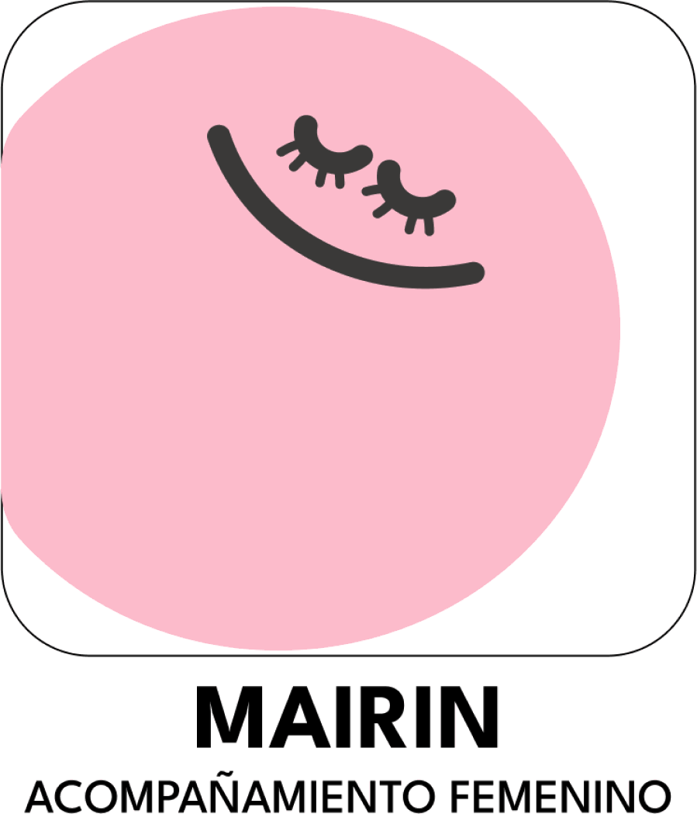
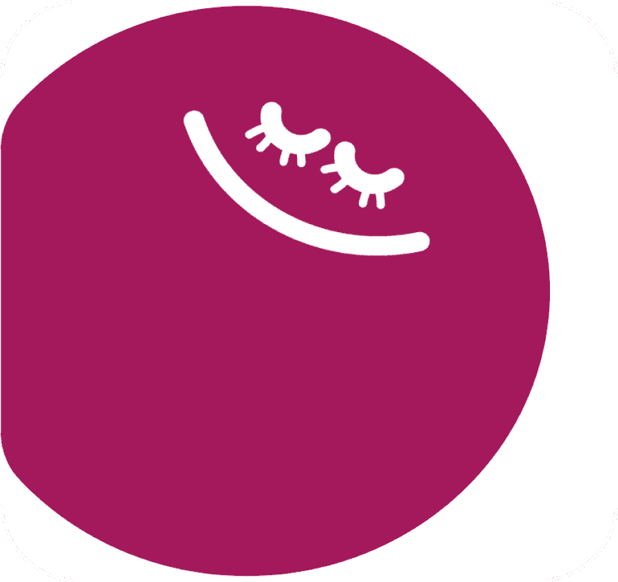
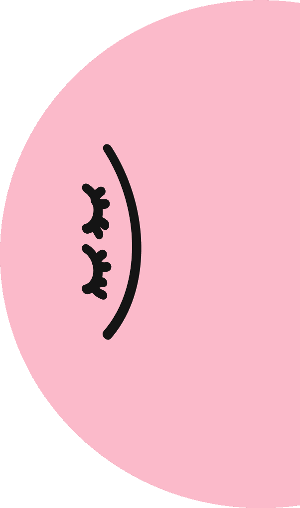
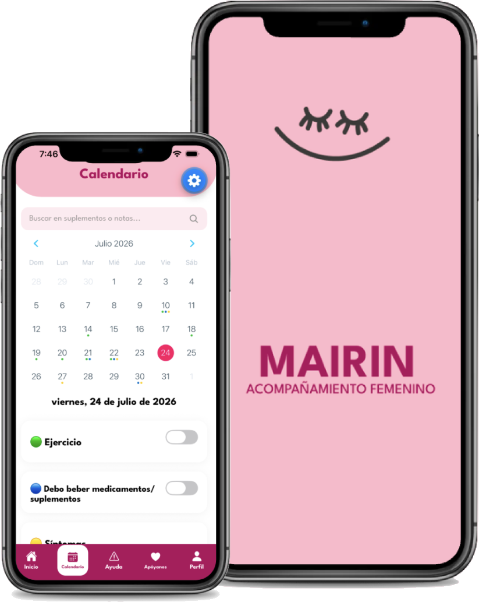

Valores de MAIRIN
- Acompañamiento constante
- Confianza construida con evidencia
- Mujeres que inspiran mujeres
- Empatía antes que tecnología
- Conocimiento que transforma
- Acceso para todas
La primera compañera digital de salud femenina creada para las mujeres de Nicaragua.


MAIRIN
ACOMPAÑAMIENTO FEMENINO
Acompañar a cada mujer en cada etapa de su vida con información confiable, herramientas prácticas y apoyo cercano, para que pueda tomar decisiones informadas sobre su salud, cuidar de sí misma con confianza y romper las barreras creadas por la desinformación. Creemos que toda mujer merece sentirse escuchada, comprendida y acompañada, sin importar dónde viva, el idioma que hable o la etapa de vida en la que se encuentre.
Ser la aplicación de salud femenina más confiable e inclusiva de Latinoamérica, transformando la manera en que las mujeres viven y entienden su salud. Aspiramos a construir una comunidad donde el conocimiento sustituya los mitos, el autocuidado sea parte de la vida diaria y ninguna mujer enfrente sola los cambios que acompañan su historia.
Una experiencia personalizada según el momento de vida de cada usuaria.
Registro del ciclo y detección de irregularidades.
Seguimiento semanal del bebé, síntomas y citas.
Bienestar físico y emocional con ejercicios y monitoreo.

te acompaña
